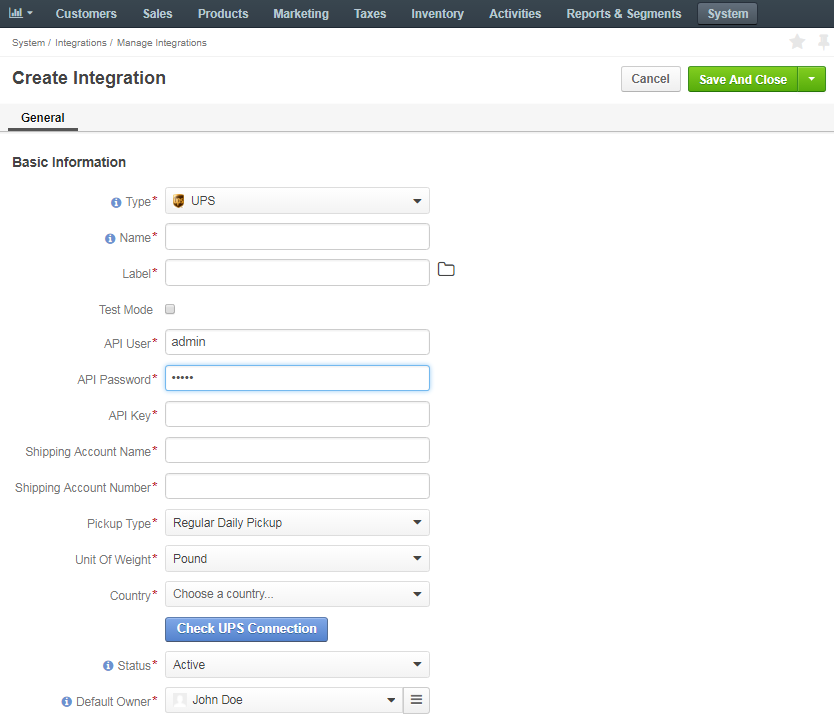
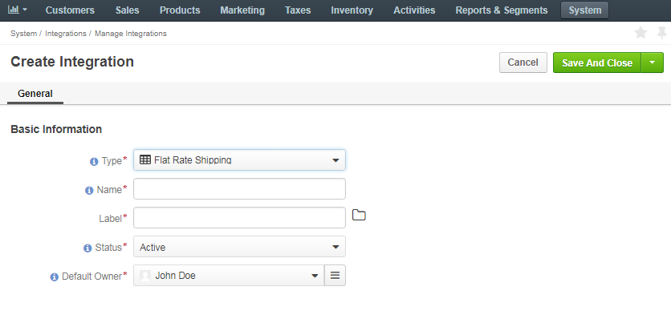

Shipping Configuration¶
System Configuration¶
You can control the following options on the system configuration level. Click on the link to get to the detailed configuration instructions.
- In the Shipping Origin, set the default shipping origin address.
- In the Shipping Options, enable and disable the shipping units of length and weight and the freight class.
- In the Shipping Tax, label the taxes that apply to the shipping cost.
Integration with Shipping Providers¶
You may configure integration with third-party providers to offer their shipping services for the quotes and orders placed using OroCommerce.
Out of the box, you may integrate OroCommerce with UPS and Flat Rate shipping.
UPS Shipping Integration¶
This section describes the steps that are necessary to expose UPS as a shipping method in OroCommerce orders and quotes.
Prepare for Integration¶
First, ensure you have registered with UPS.com and have opened a UPS Account with the necessary shipping services level.
Next:
- Log in to the ups.com <https://ups.com>.
- Navigate to the UPS Developer Kit in the Support > Technology Support section.
- Request an access key (e.g. 5F235F292A54F51F).
Please, ensure that you have requested separate access keys for your test and production environments.
Configure a UPS Integration in OroCommerce¶
To enable communication with UPS in order to request the shipping cost estimate and/or request the shipping services, establish a connection with UPS API:
Navigate to the Manage Integrations page by clicking System > Integrations > Manage Integrations in the main menu.
Click Create Integration and select UPS as integration type:
Type in the Common Integration Details:
- Name – the shipping method name that is shown as an option for shipping configuration in the OroCommerce Management Console.
- Label – the shipping method name/label that is shown as a shipping option for the buyer in the OroCommerce Store Front on the checkout.
- Short label – the shipping method name/label that is shown in the order details in the OroCommerce Management Console and Front Store after the order is submitted.
- Status - set the status to Active to enable the integration.
Set the Test Mode into the necessary state. Enable it if you are using the test UPS access key and disable for production access.
Note
For security reasons, it is critically important to use the mode that matches your environment and the UPS access key type.
Warning
Never use the UPS access key that is dedicated for production environment in your sandbox/test OroCommerce environment.
Never enable the Test Mode for the UPS integration on your production instance of OroCommerce.
Provide the UPS connection details: API user, password, and API key to connect. Click Check UPS Connection to ensure UPS API is accessible.
Provide the UPS service account details:
- Shipping account name
- Shipping account number
Select the pickup type that shall apply to the deliveries for the shipping methods via this integration. Awailable options are:
- Regular Daily Pickup
- Customer Counter
- One Time Pickup
- On Call Air
- Letter Center
Select unit of weight to use for the shipping price calculation.
Note
The unit of weight should be in sync with the options that are supported by your UPS account.
Select the destination country. To support shipping globally, create a dedicated UPS integration (e.g. UPS USA, UPS UK, UPS Germany, etc) for every country you would like to cover with UPS shipping services.
Once you select the destination, the list of shipping services appears.
Select the UPS shipping services that should be supported in the OroCommerce shipping options. Use Ctrl/Shift to select multiple options.
Set status to Active to enable the integration.
Click Save.
Next, set up a shipping rule that enables this shipping methods for all or some customer orders.
Flat Rate Shipping Integration¶
This section describes the steps that are necessary to expose flat rate shipping as a shipping method in OroCommerce orders and quotes.
To enable flat rate shipping:
Navigate to the Manage Integrations page by clicking System > Integrations > Manage Integrations in the main menu.
Click Create Integration and select Flat Rate Shipping as integration type:
Type in the integration name and label (e.g. Flat Rate). Add label translations, if necessary.
Set status to Active to enable the integration.
Click Save.
Next, set up a shipping rule that defines enables this shipping methods for all or some customer orders.
Delete Shipping Integration¶
This section describes the steps that are necessary to delete integration with the shipping provider and disable shipping methods they offer in OroCommerce orders and quotes.
To delete an integration and related shipping methods:
Navigate to the Manage Integrations page by clicking System > Integrations > Manage Integrations in the main menu.
Hover over the more actions menu on the right side of the line with the necessary integration and click .
The confirmation box is shown.
If any shipping rule depends on the integration that is being deleted, the affected shipping methods in those shipping rules will be disabled. The shipping rule might also be disabled if none of its shipping methods remain enabled.
If necessary, review the shipping rules using the link in the confirmation box.
Note
The shipping rules open in a new tab in your browser.
Once you are ready to delete the integration, click Delete.
The shipping methods created due to this integration are no longer usable in OroCommerce and cannot be enabled in the shipping rule.
Shipping Rules Configuration¶
You can configure one or more shipping rules that enable the shipping methods for the provided destinations and set the customized shipping service price by adding a surchange per service option or globally for all options of the service provider.
Shipping Rules Overview¶
On the checkout, when a customer user provides the shipping address, the OroCommerce evaluates shipping rules one by one following the Shipping Rules Sort Order. The matching shipping rule may enable one or more shipping method(s) in the shipping options on the checkout and set the shipping service fee components that are used in shipping cost calculation.
To decide whether the shipping rule fits the order or not, OroCommerce uses the shipping destination and the shipping rule condition defined with the expression. Condition may rely on the customer order context. When a shipping rule destination and condition matches the order details (e.g. customer, ordered products and the environment), the shipping rule enables it’s shipping options and shipping fee components.
Stop Further Rule Processing Mode¶
When the OroCommerce gets to the shipping rule with the enabled Stop Further Rule Processing flag, the remaining rules are not taken into account and their shipping methods are not shown as the shipping options on the checkout. This is helpful when you would like to enforce the recommended shipping method for any location or other conditions it is technically applicable (e.g. use local shipping vendor for all addresses they handle or use the specific shipping vendor that has a VIP SLA with the particular customer). It is recommended to put this type of rules to the top (e.g. setting their sort order to 1).
Overlapping Shipping Methods Definition¶
When the shipping option is enabled by multiple shipping rules, only the first occurrence is shown to the customer user - the one from the shipping rule with the lower Sort Order value which means closer to the top of the list.
For example:
| Shipping Rule | Sort Order | Shipping Method | Surcharge |
|---|---|---|---|
| A | 1 | UPS Worldwide Expedited | +10$ |
| B | 2 | UPS Worldwide Expedited | +15$ |
When both shipping rules apply to an order, the customer user gets the UPS Worldwide Expedited with +10$ surcharge.
Non-overlapping Shipping Method Definition¶
The shipping methods from the same service provide may be enabled in different shipping rules.
In the enhanced example, shipping rules enable more diverse shipping methods:
| Shipping Rule | Sort Order | Shipping Method | Surcharge |
|---|---|---|---|
| A | 1 | UPS Worldwide Expedited | +10$ |
| UPS Worldwide Express | +5$ | ||
| B | 2 | UPS Worldwide Expedited | +15$ |
| UPS Next Day Air | +5$ |
When both shipping rules apply to an order, the customer user can choose from the following shipping options:
- UPS Worldwide Expedited with +10$ surcharge (enabled by shipping rule A).
- UPS UPS Worldwide Express with +5$ surcharge (enabled by shipping rule A).
- UPS Next Day Air with +5$ surcharge (enabled by shipping rule B).
Create a Shipping Rule¶
To create a shipping rule:
Ensure that the integration(s) for the shipping method(s) you plan to use (UPS, Flat Rate, etc) is already configured.
Navigate to the list of shipping rules by clicking System > Shipping Rules in the main menu.
The following page opens:

In the General Information section:
- Tick the Enabled box to activate the shipping rule. You may keep it unselected while you are drafting and testing the conditions.
- Specify the shipping rule name and sort order to set the priority compared to other shipping rules.
- Select the shipping cost currency.
- Select the Stop Further Rule Processing, if you would like to prevent applying other shipping rules with lower priority.
In the Destinations section, add one or more destinations to apply this shipping rule to.
Click + Add. The following box appears:

Specify the destination (e.g. select a Country, or select a Country and State; for the most granularity you may provide a distinct list of Postal Codes to apply the shipping rule for.
In the Conditions section, specify the expression that describes the conditions when this shipping rule should be applied.

For detailed information about the expression language used in the shipping and payment rules, please, see the Expression Language for Shipping and Payment Rules guide.
In the Shipping Method Configurations section, you may enable one or more shipping methods with this shipping rule. To add a shipping method, select it from the list and click + Add and fill in the shipping price customization information tha may vary for different service providers.
Warning
Only one shipping method per integration may be selected in the shipping rule. For example, to enable several flat rate options with various delivery SLA and insurance, please create a separate shipping rule for every option.
For Flat Rate, provide the following information:
- Price - shipping price based on your agreement with the shipping service provider. Final Shipping price depends on the Type option (Pre Item/Per Order).
- Handling fee - additional cost for order processing by your company.
- Type - the way shipping price is calculated for the order. Supported options:
- Per Item - shipping price is a multiplication of product line item quantities (e.g. 5 cups of coffee, 10 napkins, and 5 cookies give us total of 20 items) and Flat Rate price (e.g. 1$). Finally, we add a handling fee (e.g. 10$) on top of the resulting amount. The shipping cost for this order is 20*1$+10$=30$
- Per Order - shipping price is an addition of the Flat Rate price (e.g. 1$) and a handling fee (e.g. 10$). The shipping cost for this order is 1$+10$=11$
Flat Rate service price configuration

For UPS, set Enabled for the necessary services and provide a surcharge next to the service to customize the shipping cost. If necessary, fill in the surcharge at the bottom to apply it to any enabled service on top of the per-service-surcharge.
Service options and additional surcharge configuration for UPS


Click Save.
Enable a Shipping Rule¶
To enable a shipping rule:
- Navigate to the list of shipping rules by clicking System > Shipping Rules in the main menu.
- Hover over the more actions menu to the right of the item and click .